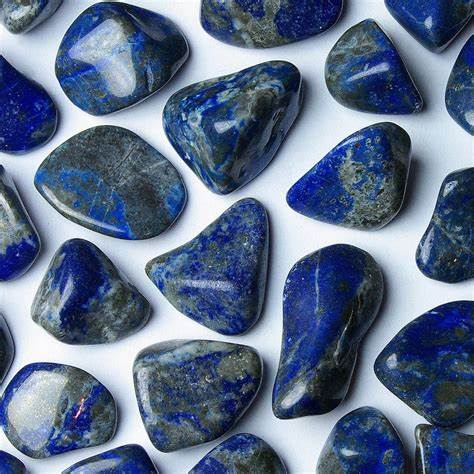
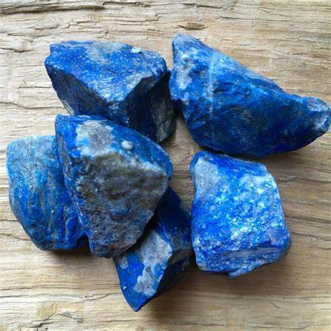
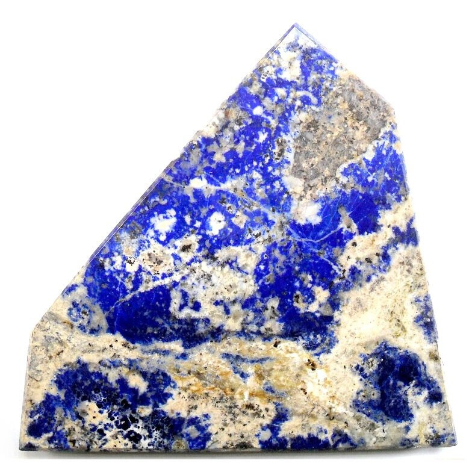
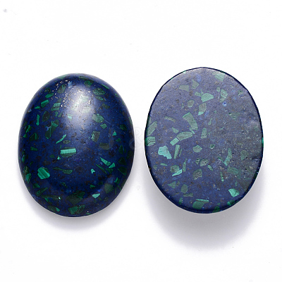
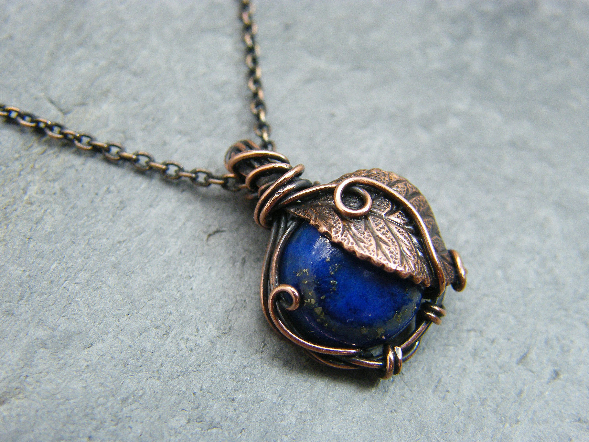
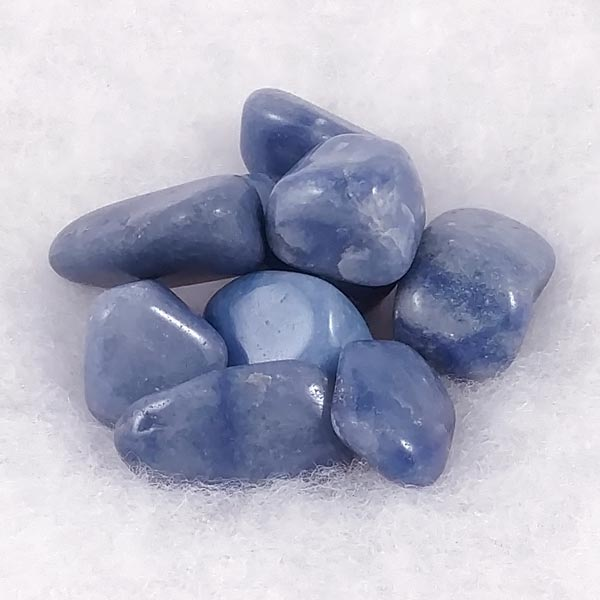
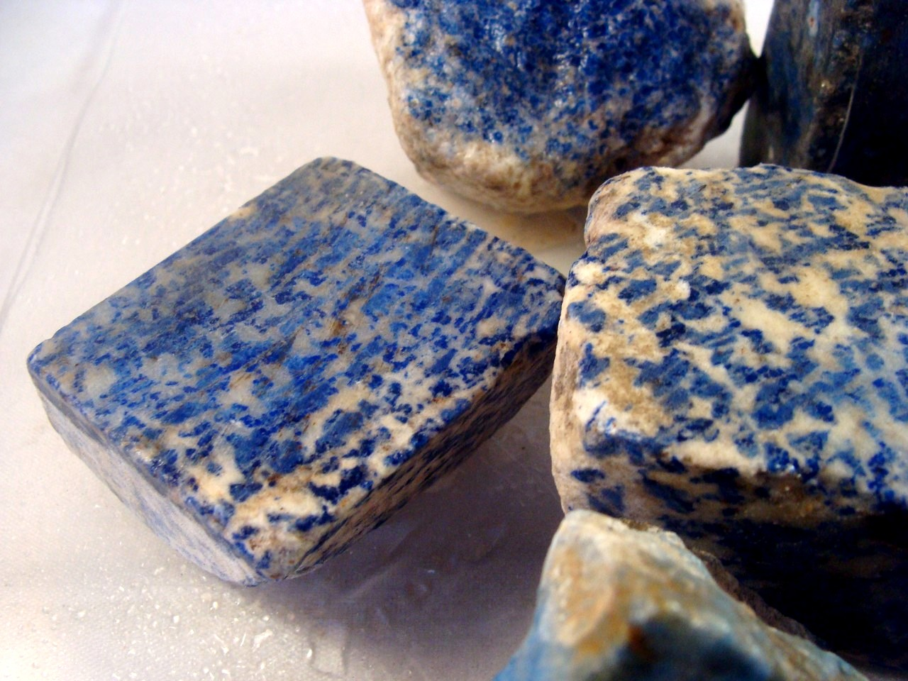
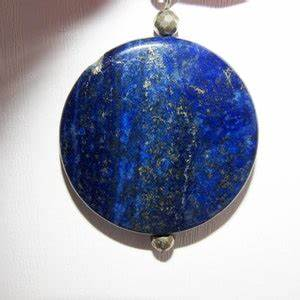

Lapis Lazuli: The Ancient Stone of Deep Blue and Mystical Power
Chemical Formula: (Na Ca)₈(AlSiO₄)₆(SO₄ S Cl)₂ (Lazurite)
Color: Deep Blue with white (calcite) and gold (pyrite) inclusions
Hardness: 5 - 5.5 on the Mohs scale
Crystal System: None (aggregate)
Localities: Afghanistan, Chile, Russia, United States
Common Uses: Jewelry, Decorative Items, Pigment, Carvings
Lapis Lazuli is one of the oldest known gemstones prized for its intense blue color and historical significance. This opaque deep-blue stone has been cherished by ancient civilizations for thousands of years and is often associated with royalty, spirituality, and wisdom. Composed primarily of the mineral lazurite, lapis lazuli may also contain calcite, pyrite, and other minerals, giving it a speckled or marbled appearance.
The name "lapis lazuli" is derived from the Latin word "lapis," meaning stone, and the Arabic word "lazaward," meaning blue. Known as the "Stone of the Sky," lapis lazuli has been revered for its ability to bring peace, harmony, and protection. It has been used in everything from jewelry to religious artifacts and even as a pigment in some of the most famous works of art.
Formation and Types of Lapis Lazuli
Lapis lazuli forms in metamorphic rocks, particularly in limestone deposits that have been subjected to high pressure and temperature. The stone is primarily composed of lazurite, which gives it its characteristic blue color, along with calcite, pyrite, and other minerals that contribute to its unique appearance.
There are several types of lapis lazuli, classified based on their color, texture, and the presence of impurities:
Afghan Lapis Lazuli
The highest quality lapis lazuli comes from the mines of Afghanistan, particularly in the Badakhshan region. This type is known for its deep, uniform blue color with minimal calcite and pyrite inclusions, making it highly valued.
Chilean Lapis Lazuli
Lapis lazuli from Chile is generally lighter in color, with more visible calcite and fewer pyrite specks. It is less expensive than Afghan lapis, but still widely used in jewelry and decorative items.
Russian Lapis Lazuli
Mined in the Baikal region of Siberia, Russian lapis lazuli is similar in quality to the Afghan variety, with a rich blue color and fine texture.
Synthetic Lapis Lazuli
Lab-created lapis lazuli mimics the natural stone but is usually less vibrant and lacks the unique inclusions of genuine lapis lazuli.
Structure and Properties of Lapis Lazuli
Lapis lazuli is an aggregate of multiple minerals, with lazurite being the primary component. The stone has a distinctive blue color, which can range from a deep intense blue to a lighter, more mottled shade depending on the presence of calcite and pyrite.
- Hardness: Lapis lazuli has a hardness of 5 to 5.5 on the Mohs scale, making it relatively soft compared to other gemstones. This softness requires careful handling, especially in jewelry.
- Color: The most prized lapis lazuli is a deep, even blue with minimal calcite and pyrite. Stones with a lighter color or more significant calcite content are less valuable but still popular for decorative purposes.
- Luster: Lapis lazuli exhibits a dull to vitreous luster. When polished, it can have a waxy sheen, especially in higher-quality stones.
- Inclusions: The presence of pyrite inclusions gives lapis lazuli a sparkling appearance, often compared to a starry night sky. Calcite inclusions, on the other hand, can create white streaks or spots within the stone.
Uses of Lapis Lazuli
Lapis lazuli has been used for a variety of purposes throughout history, from decorative objects to sacred artifacts:
- Jewelry: Lapis lazuli is a popular choice for all types of jewelry, including rings, necklaces, earrings, and bracelets. Its striking blue color makes it a favorite for statement pieces, often set in silver or gold.
- Pigment: One of the most famous uses of lapis lazuli was as a pigment in painting. The stone was ground into a powder to produce ultramarine, the most expensive and coveted blue pigment used in Renaissance art, including works by Michelangelo and Vermeer.
- Historical and Religious Artifacts: Throughout history, lapis lazuli has been used in carvings, amulets, and religious artifacts. The ancient Egyptians carved scarabs and figurines from lapis lazuli, believing the stone had protective powers.
- Decorative Items: Lapis lazuli is also used in inlay work, mosaics, and ornamental objects such as vases, boxes, and small sculptures. It is highly valued for its aesthetic appeal and historical significance.
History of Lapis Lazuli
Lapis lazuli has a rich history that spans several millennia and many cultures:
- Ancient Egypt: Lapis lazuli was highly valued in ancient Egypt, where it was believed to have protective and healing properties. The stone was used to make jewelry, amulets, and even ground into powder for cosmetics. It was also associated with the goddesses Isis and Hathor and was placed in the tombs of pharaohs to protect them in the afterlife.
- Mesopotamia: In Mesopotamia, lapis lazuli was considered a stone of the gods and was used to create seals, amulets, and statues. The famous Royal Tombs of Ur contained numerous lapis lazuli artifacts, demonstrating the stone's importance in Sumerian culture.
- Renaissance Art: During the Renaissance, lapis lazuli was ground into ultramarine pigment, which was more valuable than gold. Artists reserved this pigment for the most important aspects of their paintings, such as the robes of the Virgin Mary.
- Modern Times: Today, lapis lazuli remains a highly prized gemstone, used in fine jewelry, decorative arts, and even as a material for meditation and spiritual practice.
Unusual Varieties of Lapis Lazuli
While the classic deep blue variety is the most well-known, there are other unusual varieties of lapis lazuli:
Denim Lapis
This variety of lapis lazuli has a lighter blue color, often with more significant calcite inclusions, giving it a "denim" appearance. It is less expensive but popular in casual jewelry.
Spotted Lapis
Spotted lapis lazuli has prominent white calcite spots or streaks, creating a unique pattern within the stone. This variety is less common and often used in decorative items.
Starry Night Lapis
This variety is characterized by a high concentration of pyrite inclusions, giving the stone a sparkling appearance that resembles a starry night sky.
Enhancement of Lapis Lazuli
To improve its appearance, lapis lazuli may undergo various treatments:
- Dyeing: Some lapis lazuli stones are dyed to enhance their blue color, especially if the original stone is paler or has significant calcite inclusions. This treatment should be disclosed, as it can affect the stone's value.
- Waxing and Oil Treatment: Lapis lazuli is often treated with wax or oil to improve its luster and smooth its surface. This is a common practice and generally accepted in the industry, though it should be disclosed to buyers.
- Reconstitution: Low-grade lapis lazuli or lapis lazuli powder can be reconstituted into blocks using resin. These blocks are then cut and polished like natural stone, though they are less valuable and should be identified as reconstituted.
Famous Finds and Lapis Lazuli
Lapis lazuli has been discovered in various parts of the world, with some famous finds being particularly notable:
- Sar-i-Sang Mines, Afghanistan: The most famous source of lapis lazuli, these mines have been producing the highest quality lapis for over 6,000 years. The Sar-i-Sang mines are located in the Badakhshan region and are known for their deep blue, high-purity stones.
- Chilean Mines: In the Andes Mountains, Chilean lapis lazuli is mined primarily from the Flor de los Andes and Las Flores mines. While not as deep in color as Afghan lapis, Chilean lapis is still prized for its beauty and used extensively in jewelry and crafts.
- Lake Baikal, Russia: The Baikal region of Siberia produces high-quality lapis lazuli, similar in color and quality to Afghan stones. Russian lapis has been used historically in religious icons and architectural decoration.
Sourcing Locations and Mining
Lapis lazuli is sourced from several key locations around the world, each known for producing stones with distinct characteristics:
- Afghanistan: The Badakhshan region in northeastern Afghanistan is the most significant source of lapis lazuli. The stone from this region is known for its deep, rich blue color and is considered the highest-quality lapis in the world.
- Chile: Chile is another important source of lapis lazuli, particularly from the Flor de los Andes and Las Flores mines in the Andes Mountains. Chilean lapis is often lighter in color with more calcite, but it is still highly valued in jewelry and decorative arts.
- Russia: The Baikal region in Siberia is a historical source of lapis lazuli, known for its rich blue stones with minimal inclusions. Russian lapis has been used in religious art and architecture for centuries.
- United States: Lapis lazuli can also be found in small quantities in California and Colorado, though these sources are not commercially significant.
Exploration and Mining
The exploration and mining of lapis lazuli involve locating suitable deposits and extracting the stone with care:
Exploration
Geological surveys and sampling are conducted to locate lapis lazuli deposits, typically in mountainous regions with limestone formations. Traditional methods such as surface prospecting and test drilling are used to identify potential mining sites.
Mining Methods
Lapis lazuli is usually mined through traditional methods, often involving manual labor due to the remote and rugged locations of the deposits. Open-pit and underground mining techniques are employed depending on the depth of the deposit. Careful extraction is necessary to avoid damaging the stone.
Processing
After extraction, lapis lazuli is cleaned, sorted, and graded based on color, texture, and the presence of inclusions. The stone is then cut and polished for use in jewelry, decorative items, or as pigment.
Identifying Authentic Lapis Lazuli
Identifying an authentic lapis lazuli involves examining several key characteristics:
- Color: Authentic lapis lazuli has a deep blue color, often with small pyrite inclusions. Stones with a uniform color and minimal calcite are considered the most valuable.
- Inclusions: Pyrite inclusions, which appear as golden flecks, are a hallmark of natural lapis lazuli. Calcite inclusions, which appear as white streaks or spots, are common but reduce the stone's value.
- Testing Methods: Common tests for authenticity include checking for dye (by rubbing the stone with acetone) and examining the stone's structure under magnification. Genuine lapis lazuli should have a solid color with visible inclusions of pyrite and minimal calcite.
- Certification: Although lapis lazuli is less commonly certified than other gemstones, stones from reputable sources or dealers may come with a certificate of authenticity, especially for high-quality specimens.
Cutting and Polishing Lapis Lazuli
Cutting and polishing lapis lazuli is an art that enhances the stone's natural beauty:
- The Cutting Process: Lapis lazuli is typically cut into cabochons, beads, or inlays, as these shapes best showcase the stone's color and texture. The stone is carefully cut to minimize the visibility of calcite inclusions and to highlight any pyrite specks.
- Polishing: After cutting, lapis lazuli is polished to a high sheen. The polishing process involves using fine abrasives to smooth the surface and enhance the stone's luster. Polished lapis lazuli has a soft, waxy appearance that highlights its deep blue color.
- Carving: Due to its relative softness, lapis lazuli is also used for carving intricate designs, such as figurines, small sculptures, and decorative objects. Skilled artisans can create detailed carvings that highlight the stone's unique color patterns.
Lapis Lazuli Market and Trade
The market for lapis lazuli is influenced by several factors, including quality, origin, and demand:
- Value Determinants: The value of lapis lazuli is determined by its color, the presence of inclusions, and the stone's overall quality. Deep blue stones with minimal calcite and attractive pyrite flecks are the most valuable.
- Global Trade: Afghanistan remains the leading producer of high-quality lapis lazuli, followed by Chile and Russia. The global trade of lapis lazuli is driven by demand from jewelers, artisans, and collectors who value the stone for its historical significance and beauty.
- Market Trends: Lapis lazuli continues to be popular in jewelry and decorative arts. The demand for ethically sourced stones is increasing, particularly as consumers become more aware of the conditions in which lapis lazuli is mined. Artisanal and small-scale mining practices are common, especially in Afghanistan, where much of the stone is extracted using traditional methods.
Buy & Sell Authentic Lapis Lazuli Here
Caring for Lapis Lazuli
Lapis lazuli requires proper care to maintain its beauty and prevent damage:
- Cleaning: Clean lapis lazuli with warm, soapy water and a soft cloth. Avoid ultrasonic cleaners and harsh chemicals, as these can damage the stone's surface or alter its color. Due to the stone's porosity, it should not be soaked in water.
- Storage: Store lapis lazuli separately from harder gemstones to prevent scratches. Keep it in a soft pouch or lined jewelry box to protect it from dust and abrasion.
- Handling: Lapis lazuli is relatively soft and can be prone to scratching and chipping. Handle it with care, especially when wearing or cleaning jewelry. Avoid exposing lapis lazuli to extreme temperatures or direct sunlight, as this can cause the color to fade.
- Repolishing: Over time, lapis lazuli may lose its luster. Professional repolishing can restore the stone's shine and enhance its appearance.
Metaphysical Properties of Lapis Lazuli
Lapis lazuli has been attributed with various metaphysical properties throughout history:
- Wisdom and Truth: Lapis lazuli is often associated with wisdom, truth, and intellectual development. It is believed to enhance the ability to speak one's truth and to promote clarity of thought.
- Spiritual Growth: The stone is considered a powerful tool for spiritual growth and meditation. It is said to help the wearer connect with their higher self, access spiritual insight, and deepen their understanding of the universe.
- Protection: Historically, lapis lazuli was worn as a protective amulet to guard against negative energy and psychic attacks. It was believed to shield the wearer from harm and to bring peace and harmony.
- Emotional Healing: Lapis lazuli is thought to balance emotions, alleviate stress, and promote a sense of inner peace. It is often used in crystal healing practices to encourage self-awareness and self-expression.